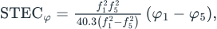

整体概括
沿地球边缘看色散，而不是测月球上的电子密度
LuGRE 在地月转移及月面等阶段接收 GPS 与 Galileo 双频信号。作者从同一卫星的观测量中提取沿传播路径累积的色散，再按切点掠过近地等离子体的过程给弧段分类。成果是 263 条带有标签、时间和几何信息的实测衍生弧段，不是月球周围的原位电子密度测量。
对照原文证据
This dataset is a catalog of 263 dispersive arcs induced by ionospheric and plasmaspheric occultation observed in GNSS signals recorded by the Lunar GNSS Receiver Experiment (LuGRE) payload during Blue Ghost Mission 1 (BGM1), in cislunar space and on the lunar surface.Occultation arcs are identified and classified as ingress, egress or tangent by combining independently GPS and Galileo dual-frequency observables and computing the rate of the total electron content (ROT) and ROT index (ROTI), and are validated through a geometric criterion based on the grazing altitude of the tangent point.最值得保留的是每条弧的质量标志
目录把易于筛查的标量与可重看波形的序列同时保存。几何对照与观测分类在 263 条弧中有 30 条不一致，占 11.4%；这不是在独立人工真值上测得的错误率。读者可从 ro_status 找到这些弧，按用途复查或剔除，而不是把它们当成不存在。
对照原文证据
The geometric validation described in the Technical Validation section disagrees with the classification for 30 of the 263 arcs, corresponding to a disagreement rate of 11.4%.Arcs whose classification disagrees with the geometric validation are flagged in the ro_status attribute, and we recommend inspecting, or excluding them, depending on the intended application.The body of the file contains one entry per each identified occultation arc, each labelled with its composite arc identifier as described above. Each entry stores a set of scalar attributes (Table 3) and a set of associated time series (Table 4).Research gap
原任务的观测量不等于现成的掩星事件表
常规低轨、地球同步轨道及地基探测对掠射高度和视线几何各有覆盖限制，LuGRE 提供了不同的观测视点。不过原始任务数据不是为了提取特定的色散事件组织的；这篇论文的贡献是从分散的跟踪窗口中整理可检索的弧段，并保存时间序列供复查。
对照原文证据
A systematic characterisation of the ionosphere and plasmasphere requires long-duration observations spanning a wide range of grazing altitudes and geometries. Despite their continuous operations, radio occultation missions in low Earth orbit (LEO), geostationary orbit (GEO) and ground sounding experiments sample only a limited portion of this range 1,6 .Although LuGRE data can support several investigations, the vantage point offered by BGM1 makes them particularly valuable for space-climatology studies. However, the public LuGRE dataset 13 was not designed to isolate the observations relevant to this purpose. To address this need, we developed an algorithm that detects, characterizes and classifies the occultation arcs in the LuGRE GNSS observables across all four mission phases.用信号波形定时间，用切点几何做交叉检查
仅用路径是否靠近地球，不能直接说明观测量什么时候明显受色散影响；只看波形又可能把跟踪断裂当成等离子体边界。作者用 ROT、ROTI 先识别可用弧，再用轨道与接收机位置检查运动方向。这里总结的是作者的选题取舍，不是对所有掩星法的全面比较。
对照原文证据
Differently from a pure geometrical approach, relying on TEC-derived parameters gives the possibility of identifying the exact timespan in which the dispersive effects are impactful. To this end, the GNSS raw observables are processed through a dedicated pipeline summarized in Figure 2.The classification validation is performed after the entire identification/classification process by adopting an approach solely based on the geometry and tangent point dynamics.算法主线

原图由 arXiv 加载；若未显示，可打开下方原图链接。
跟着原图读
- 先看哪里
沿左侧卫星发出的深蓝主瓣与浅蓝旁瓣，追到 BGM1 虚线路径上的绿、黄实心点；空心圈在地球遮挡方向。不要把路径上的接收点和视线上标出最近地心位置的小绿点当成一回事。
- 能说明什么
视线与地球保持的距离会改变它经过的近地等离子体区域。图以黄色环示意电离层、浅黄色区域示意日侧与夜侧等离子体层，表达不同视角可能探测到不同的路径积分。
不能推出什么：示意图未按比例绘制，不能量距离、反推电子含量，或据点位估计主瓣和旁瓣在目录中的数量。

原图由 arXiv 加载；若未显示，可打开下方原图链接。
跟着原图读
- 先看哪里
从左到右追实线：码、相位走双频掩膜和特征提取；中间分类框先检查连续弧顺序及 ROT/ROTI 不一致，再指向三个深蓝类别框。读框内 ROT 的帽符号：用于比较的是弧内中位数，不是逐点 ROT。
- 能说明什么
右上单列 LuGRE 参考轨迹与卫星星历，流向几何复核；虚线再指向 HDF5 输出，表示另一路一致性信息。方法图和正文对入/出掩采用严格大于/小于阈值，切掠包含等号；英文图注在边界处写法不同。
不能推出什么：方框不显示每个类别的识别成功率，也不是完全独立盲测；正文的阈值确定与纠错环节也用到几何。
单频掉线先不截断，双频量缺失仍保留
LuNART 解码码、相位和载噪比。先做码减载波的 Grubbs 周跳检查，再排除低于 20 dB-Hz 的观测。单频仍在跟踪时保留可见弧，但双频量在缺频历元不计算；Akima 只补分类所用的 ROTI 连续性，目录和特征统计仍以原始未插值序列为准。
对照原文证据
First, cycle slips are detected on the code-minus-carrier (CMC) time series of each signal through Grubbs outlier test 19 . The epochs at which a cycle slip is detected are flagged to be properly treated in the subsequent processing steps, namely to re-initialize the leveling filter and to discard corrupted ROT estimates, as described in the next subsection.Second, a masking procedure is applied to the C/N_{0} estimates: all pseudorange and carrier-phase measurements whose C/N_{0} falls below 20 dB-Hz are excluded, to prevent observations collected under degraded tracking conditions from introducing noise into the derived quantities.The first step flags a satellite as visible at a given epoch if its signal is received on at least one of the two frequencies, f_{1} or f_{5} : the satellite is regarded as "untracked" only when both are simultaneously absent, so that gaps occurring on a single frequency do not interrupt the visibility arc.Finally, the gaps in the ROTI series falling within the arc-validity mask are filled by Akima interpolation method 25 , yielding a restored ROTI series that is used only to preserve arc continuity during classification. The interpolated values are not used for any quantitative analysis and are not included in the catalog, which only provides the original ROTI series.先合短缺口，再用方向和极值定类
同一卫星相邻候选段间隔小于 300 s 时合并，只对超过 100 s 的候选段分类。去异常后的弧内 ROT 中位数与 ROTI 最大值时刻互为判据；阈值为 0.007 TECU/s，开头或结尾由首尾 5% 样点定义。入掩用 ROTI 谷值定起点，出掩用谷值定终点，切掠不因穿过最近点就截成两条。
对照原文证据
Third, consecutive segments are grouped to account for the case in which the ROTI series is characterized by several adjacent segments separated by short dropouts, caused either by tracking losses or by samples discarded by the ROTI windowing. Two consecutive segments are merged into a single candidate arc if T_{g}<300 s; otherwise, they are treated as distinct arcs.Finally, after grouping, the features are then recomputed on each candidate arc, together with the median ROT i.e., \widehat{\mathrm{ROT}} obtained after removing outliers with Tukey’s fences 26 . The median is preferred to the mean for its robustness to outliers, and provides the primary discriminant between arc types. To reduce the risk of misclassification, only candidate arcs with L>100 s are classified. For instance, no arc could be classified for operation OP3_0, since its only tracked satellite was visible for less than 100 s.The classification relies on two complementary criteria: the sign and magnitude of \widehat{\mathrm{ROT}} compared to a data-driven threshold \delta=0.007 TECU/s and the temporal location of the ROTI maximum within the arc.The maximum is considered to lie at the beginning or at the end of the arc if it falls within the first or last 5% of the arc samples, respectively. For ingress and egress arcs, the arc is then trimmed so that its start or end, respectively, coincides with the ROTI minimum, as detailed below.判据冲突有回退，切点几何不是训练标签
入掩通常为正趋势、ROTI 峰靠末端；出掩相反；切掠的中位趋势接近零，ROTI 可呈 U/W 形。两指标矛盾时允许仅用 ROT 回退；长中断前后的同类标签还会按入掩—出掩顺序纠正。最终用另一路几何规则评估一致性，但几何也被用于阈值的确定，不能当成完全独立验证集。
对照原文证据
Dark blue boxes: output arc classes, assigned from the sign and magnitude of the rate of change of TEC (ROT) relative to the threshold \delta , and from the position of the maximum of the ROT index (ROTI) within the arc. Ingress arcs satisfy ROT\geq\delta with the ROTI maximum at the end of the arc, egress arcs ROT\leq-\delta with the ROTI maximum at its start, and tangent arcs |ROT|\leq\delta with a U/W-shaped time series. Consistency checks and fallback rules resolve cases where the two criteria disagree.Owing to the hard threshold \delta , the ROT and ROTI criteria may be mutually inconsistent, preventing a definitive classification. In such cases, a fallback class based solely on \widehat{\mathrm{ROT}} is assigned and should be interpreted with caution, as not all classification criteria are satisfied.A full occultation produces a prolonged signal interruption ( T_{g}>1800 s in this catalog) and is therefore expected to yield an ingress followed by an egress. When two consecutive arcs are classified as ingress-ingress or egress-egress, one of the two labels is necessarily incorrect, and the classification of one arc is overridden to restore the chronological ingress-egress order.The given threshold \delta was derived from arcs whose ROTI series pass a robust noise screening, i.e., Tukey’s fences 26 on the Median Absolute Deviation (MAD)-based ROTI residual, excluding arcs missing more than 50% of their samples. \delta corresponds both to the upper bound of |\widehat{\mathrm{ROT}}| for tangent arcs identified from the tangent-point geometry (median plus three MADs) and to the 10th percentile of |\widehat{\mathrm{ROT}}| for ingress and egress arcs.从位置到切点高度，再看时间走势
作者结合接收机接收时刻位置和卫星发射时刻位置，做 Sagnac 改正后求视线切点，并转到 WGS84 求高。入掩看高度下降及末端最小，出掩看高度上升及起点最小；切掠强调内部最小值。入/出方向还要比较高度变化率中位数与由切掠样本给出的 1000 m/s 门槛。
对照原文证据
is the unit vector. To extract the grazing altitude is necessary to convert \mathbf{p} from ECEF coordinates to geodetic latitude, longitude, and altitude using the World Geodetic System 1984 (WGS84) reference ellipsoid 3 .At this point, the temporal evolution of the grazing altitude hinders the nature of each arc. Relying on geometry-based criteria is possible to perform a classification i.e. comparing the median of the grazing altitude time derivative \mathrm{\widehat{v_{h}}} against a data-driven threshold \gamma = 1000 m/s set according to the fastest tangent arc.Ingress: the first altitude estimate exceeds the last one and the minimum corresponds to the last sample in the series as the tangent point gets closer to the Earth horizon. Furthermore, since the grazing altitude decreases \mathrm{\widehat{v_{h}}}<-\gamma .Egress: on the other hand, when the tangent point leaves the Earth horizon, the initial altitude results lower than the final one and the minimum corresponds to the first sample in the series. Consequently the last estimate is the highest point of the arc. Correspondingly, \mathrm{\widehat{v_{h}}}>\gamma .关键公式
相位和码测同一条路，但误差特性不同
对同一颗星的两个频率分别做码差和相位差；群延迟与相位超前符号相反，所以两式相减方向对调。作者以码减相位的累计均值给相位定平。定平保留了部分码端偏差，不能把输出当成已校准的绝对 STEC；周跳或较长缺口后要重启均值。
对照原文证据
Signals transmitted at different carrier frequencies experience different group delays and phase advances; therefore, by exploiting the dispersive nature of the ionosphere and plasmasphere, STEC can be estimated 3,20 . Dual-frequency pseudorange ( \rho ) and carrier-phase ( \varphi , in meters) measurements collected from the same GNSS satellite can be combined to obtain the code-derived STECvalues are converted to TECU by multiplying by 10^{-16} . \mathrm{STEC}_{\rho} provides an absolute but noisy estimate, whereas \mathrm{STEC}_{\varphi} is considerably more precise but biased by the unresolved carrier-phase ambiguity.Combining the absolute accuracy of the code-derived estimate with the precision of the phase-derived one, a recursive carrier-phase levelling algorithm 21 is adopted. The method is based on the code-minus-phase differencing of STEC estimatesThis filter needs to be reinitialized under four specific conditions: at the beginning of each dataset, at the first valid epoch, whenever a cycle-slip is flagged by the upstream receiver processing, or whenever the gap between consecutive valid samples exceeds a configurable threshold (e.g., 10 s).ROT 对时间做差，ROTI 对局部波动做统计
作者在连续双频段上对相位 STEC 求导，端点改用单边差分；常值偏差可在差分中消去，周跳却会制造尖峰。ROTI 是 ROT 的窗口标准差，不代表同窗内的平均斜率；作者取 30 s 窗并用 TECU/s，和分钟窗、TECU/min 产品比较应分别处理窗长与单位。
对照原文证据
In this methodology, the ROT, i.e., the first order time-derivative of STEC, is computed from the phase-derived STEC of Eq. 2, which is less noisy than the code-derived and leveled estimates. To retrieve the ROT estimate, a three-point central finite-difference operator with second-order accuracy is computed on individual dual-frequency observables segments with no gaps exceeding one epoch:expressed in TECU/s. At the segment endpoints, first-order forward and backward differences are adopted to minimize sample loss. The differentiation removes both the carrier-phase ambiguity and the instrumental biases, which can be assumed to be constant over consecutive epochs. Cycle slips, however, produce spurious spikes in the ROT that propagate to the ROTI 23 ; therefore, all ROT estimates within one epoch of a flagged cycle slip are discarded.To describe the ROT variability, the ROTI can be computed, which corresponds to its standard deviation over a sliding window:In this work, a 30-s window was selected to provide a sufficiently large number of ROT samples for a stable estimate of ROTI while limiting the spatial extent of the ionospheric and plasmaspheric region contributing to the estimate. ROTI is expressed in TECU/s (multiply by 60 for TECU/min, the unit commonly used in the literature).相位双频差提取路径积分

相位在等离子体中是超前，不同频点的米制相位先按式中顺序相减，再乘色散系数。频率用 Hz 时输出电子数每平方米；乘 10⁻¹⁶ 转成 TECU。以论文频率为例，若相位差是 +1 m，代入约得 +7.76 TECU；负值并不必然表示物理上出现负电子密度。
符号与实现提醒
- f₁, f₅
- GPS L1/L5 或 Galileo E1/E5a，单位 Hz
- φ₁, φ₅
- 同一卫星同历元的载波相位，单位 m，不是周数
- STECφ
- 双频相位给出的斜向电子含量，仍含模糊度及硬件偏差
不要与码组合交换差分顺序或直接填入 MHz。需先把周数乘波长变成米，且不跨星座或卫星组合。
累计码—相位差，给相位定平
把本历元的码减相位 STEC 差加入从上次重启开始的累计均值，再按原式 (5) 把均值加回相位 STEC。示例不是论文数据：已有两次有效样本，均值为 4 TECU，第三次差为 7 TECU，则新均值为 (2×4+7)/3＝5 TECU。
符号与实现提醒
- Δ(t)
- 同历元码 STEC 减相位 STEC，单位 TECU
- Θ(t)
- 上次重启以来估计的码相位偏移，单位 TECU
- K
- 上次重启以来有效历元数，无量纲
K 不是固定滑窗长度；起始、首个有效历元、周跳或过长间隔要重启。定平不是差分码偏差校准，也不用于论文的 ROT 差分。
用相位 STEC 估计瞬时变化率
中央差分在同一段内用前后样点的相位 STEC 差除以实际时差。举例：前后相距 2 s，读数分别为 8 与 10 TECU，中心历元的 ROT 为 +1 TECU/s；常值偏差不改变这个结果。
符号与实现提醒
- tₖ₋₁, tₖ₊₁
- 中心历元的前、后有效样点时刻，单位 s
- STECφ
- 相位导出的 STEC，单位 TECU
- ROT
- 有符号的 STEC 变化率，单位 TECU/s
只在论文限定的连续段上求差，段端用前向或后向差；周跳邻近的结果剔除。不要用补过的 ROTI 逆算 ROT。
把局部 ROT 离散程度与方向分开
在以 k 为参照的窗口内，把 ROT 减窗均值后求均方根，用 N 而不是 N−1。例：窗口只有两个 ROT 值 1 和 3 TECU/s，均值 2，ROTI 为 1 TECU/s；若两者都为 2，ROTI 为零。
符号与实现提醒
- k, n
- 中心索引与窗口内的样点索引
- N
- 用于该窗口的样点数；论文采用 30 s 窗
- ROTₙ, ROT 平均值
- 逐样点变化率与窗均值，单位 TECU/s
- ROTI
- 窗口标准差，与 ROT 同单位且非负
图中的 ROTI 峰不是正向 STEC 峰。窗口长度与采样、边缘缺测共同影响方差，转换时间单位不能替代窗长对齐。
把接收机位置投影到与视线垂直的平面
从接收机位置中扣除沿单位视线方向的分量，得到至地心最短的直线位置矢量。例：位置为 (3,4,0) km、视线方向取 (1,0,0)，内积为 3 km，投影点为 (0,4,0) km；其长度也不是论文使用的椭球高。
符号与实现提醒
- rᵣₓ
- 接收机接收时刻的地固系位置，长度单位需一致
- r̂_LOS
- 用卫星和接收机位置算出的单位视线矢量，无量纲
- p
- 直线到地心的最近点地固矢量；需再按原式 (9)–(10) 转 WGS84 高度
这一步是对无限直线的投影；复用时应另外检查最近点是否落在物理传播段内。实际射线路径的弯曲在本文几何验证中被忽略。
实验怎么做
比较对象是同一目录上的两种标注，不是模型排行榜
候选数据来自 GPS 和 Galileo 的 1 Hz 双频实时处理观测。21 个带实时观测的操作窗口中，因唯一卫星跟踪少于 100 s 而剔除 OP3_0，余下 20 个窗口分别处理。几何法作为同批弧的对照，没有神经网络训练、训练集/测试集切分或与多种算法对打。
对照原文证据
The primary input is the Lunar GNSS Receiver Experiment (LuGRE) Mission Data dataset 13 , which contains the GPS and Galileo observables recorded on the L1/E1 and L5/E5a bands at 1 Hz across all BGM1 mission phases, together with the table of the executed scientific operations pursued by the payload.Since the classification relies on dual-frequency observables, only operations that include RTP observables are considered. Of the 21 such operations, OP3_0 was discarded because a single satellite signal was visible and tracked for less than 100 s, so that 20 operations, each processed independently, contribute to the catalog.The classification validation is performed after the entire identification/classification process by adopting an approach solely based on the geometry and tangent point dynamics.看目录结构时先区分识别窗口和跟踪窗口
文件头记录全局元数据与分弧型统计；弧条目有星座、任务阶段、Kp、验证状态及一组时序。做弧内统计应以 arc_utc_start/end 截取，而非把 ro_utc_start/end 内整段卫星跟踪当成掩星；双频自然缺口可以出现在交付序列里。
对照原文证据
The file header stores dataset-wide attributes, summarized in Table 1, together with per-arc-type summary statistics (Table 2), computed independently for each arc type.mission_phase COMMISSIONING, TRANSIT, LLO, SURFACE op_id Operation identifier ro_delta_stec STEC variation associated with the arc ro_max_roti Maximum ROTI value within the arc ro_min_roti Minimum ROTI value within the arc ro_rot_median Median Rate of TEC over the arc ro_status Validation outcome (correct/wrong) with respect to geometric validationThe body of the file contains one entry per each identified occultation arc, each labelled with its composite arc identifier as described above. Each entry stores a set of scalar attributes (Table 3) and a set of associated time series (Table 4).It should be noted that the stored time series are not restricted to the identified arc timespan (i.e., arc_utc_start , arc_utc_end ) neither associated to the arc-validity mask, but instead span the full tracking arc (i.e., ro_utc_start , ro_utc_end ), i.e., the continuous interval over which the satellite was tracked. Therefore, it is possible that all those double-frequency based time series presents some natural gaps whenever one of the two frequencies data record is missing.数据和生成代码分别有归档入口
论文把 HDF5 数据目录 v1.0.0 指向 Zenodo 23216092，生成代码指向 Zenodo 23330533，并说明可在 MATLAB 上运行。代码归档另含配置说明和依赖附录；文章和归档 README 对开发版本的表述不同，复用时应记录实际 MATLAB 和工具箱版本。已读取的来源未给出可比较的总耗时。
对照原文证据
The LuGRE radio occultation catalog recorded in HDF5 format and presented through this article has been deposited in its version v1.0.0 on the Zenodo online repository and can be accessed under the same name (https://zenodo.org/records/23216092).The code used for the creation of the dataset can be found at https://zenodo.org/records/23330533. The code can be run in MATLAB on both macOS/Linux and Windows platforms. In particular, the code was written in MATLAB 2022b, so this version is suggested to avoid any compatibility problems. A README file describing the code usage is present in the same repository.提升与证据
计数和平均时长回答不同问题
按整目录口径，出掩 94 条（35.7%），入掩 89 条（33.8%），切掠 80 条（30.4%）；各类平均时长分别为 367、450、2110 s。切掠条数不是最多，却平均明显更长；不应把单弧均值当成观测覆盖率，也不应用弧时长给同一个总数的占比再加权。
对照原文证据
Table 5 summarises the outcome of the classification. For each arc type, it reports the number of arcs, their percentage within the corresponding group, and their mean duration, both for the whole catalog and broken down by constellation and mission phase.Egress 94 35.7 367 59 36.4 348 35 34.7 398 3 20.0 423 9 42.9 199 3 37.5 348 79 36.1 384 Ingress 89 33.8 450 58 35.8 433 31 30.7 480 1 6.7 551 8 38.1 304 5 62.5 648 75 34.2 451 Tangent 80 30.4 2110月面记录占大头，星座数也不能用作接收率
全目录中月面阶段 219 条、占 83.3%；其余为调试 15、转移 21、低月轨 8 条。按星座，Galileo 为 162 条、GPS 为 101 条。低月轨组没有报告切掠弧，这只是该操作采样下的目录构成；没有按观测窗口长度、可见弧机会或跟踪工况归一。
对照原文证据
Table 5 summarises the outcome of the classification. For each arc type, it reports the number of arcs, their percentage within the corresponding group, and their mean duration, both for the whole catalog and broken down by constellation and mission phase.Overall Constellation Mission phase Galileo GPS Comm. Transit Low Lunar Orbit Surface ro_type n % \bar{t} [s] n % \bar{t} [s] n % \bar{t} [s] n % \bar{t} [s] n % \bar{t} [s] n % \bar{t} [s] n % \bar{t} [s] Total 263 100 – 162 61.6 – 101 38.4 – 15 5.7 – 21 8.0 – 8 3.0 – 219 83.3 – Egress 94 35.7 367 59 36.4 348 35 34.7 398 3 20.0 423 9 42.9 199 3 37.5 348 79 36.1 384 Ingress 89 33.8 450 58 35.8 433 31 30.7 480 1 6.7 551 8 38.1 304 5 62.5 648 75 34.2 451 Tangent 80 30.4 2110 45 27.8 2105 35 34.7 2116 11 73.3 1068 4 19.0 792 – – – 65 29.7 2367不一致应逐条检查，不能折算成定位误差
几何规则与信号分类对 263 条中的 30 条不一致，论文报告为 11.4%。报告指出观测窗截短、只用 ROT 的回退以及双频掉线都是解释方向。分歧反映两个规则的不同判别条件；即使一致，也不验证硬件偏差、电子密度反演或 GNSS 定位收益。
对照原文证据
The geometric validation described in the Technical Validation section disagrees with the classification for 30 of the 263 arcs, corresponding to a disagreement rate of 11.4%.Second, whenever the ROT and ROTI features are inconsistent, the classification relies only on the thresholded \widehat{\mathrm{ROT}} , which is sensitive to such edge effects and to other non-idealities. Third, gaps caused by interruptions of dual-frequency tracking make the ROT and ROTI series intermittent and harder to interpret. Arcs whose classification disagrees with the geometric validation are flagged in the ro_status attribute, and we recommend inspecting, or excluding them, depending on the intended application.
原图由 arXiv 加载；若未显示，可打开下方原图链接。
跟着原图读
- 先看哪里
先认各列竖点线界定的目录弧，横轴为秒。再用右轴读灰色掠射高度（km）：入掩下降、出掩上升、切掠列先降后升。图中高度走势画为灰色斜虚线，横向的灰线是地表零高度，不是另一条观测曲线。
- 能说明什么
在 c 行看倒三角峰和空心三角谷：左列峰靠末、中央峰靠首，右列虽有内部扰动也有很强的末端尖峰。a 行为 TECU，b/c 为 TECU/s；三列的时间和纵轴尺度不同，比较时先读刻度再看趋势，别把绘制范围内的所有跳变纳入所识别弧。
- 再对照地图
d 行每列画切点的经纬度轨迹，粗段为本弧；白、浅灰、深灰分别对应弧中点时的日照、曙暮光、夜间。实线与虚线是地表和弧中位掠射高度处的日夜分界，标题并列给 UTC 与地方时。
不能推出什么：这组例图不是全目录统计；不能用带偏差的定平 STEC 比较绝对电子密度，也不能仅凭某个峰值宣称出现等离子体不规则体或定位风险。
局限与追问
视线积分不拆层，旁瓣也不单列
双频信号只测沿整条路径累积的电子含量，而不是电离层、等离子体分别的贡献。目录没有区分主瓣与旁瓣；高掠射高度的旁瓣弧可能较多反映等离子体，作者建议谨慎分类。几何对照还忽略射线弯曲，因此一致性不能当成切点坐标或全球物理模型的精度证明。
对照原文证据
However, dual-frequency observations are sensitive only to the electron content integrated along the whole ray path, and therefore cannot separate the two contributions 1 .Arc classification is based on the dispersive effects induced by TEC and validated through the geometry of the tangent point. Arcs generated by sidelobe transmissions and associated with high grazing altitudes may be affected by dispersive effects induced primarily by the plasmasphere, and only to a lesser extent by the upper layer ionosphere. The distinction between mainlobe and sidelobe arcs is out of the scope of this catalog. However, since sidelobe observations are poorly characterized in the literature, they may lead to misleading classifications and should be treated with caution.Note that the deviation of the actual propagation path from the straight line of sight used to define \hat{\mathbf{r}}_{\mathrm{LOS}} and the tangent point \mathbf{p} ,i.e. ionospheric ray bending, is neglected in this geometric validation. However for the classification is not critical as this approximation can introduce horizontal and vertical shifts of the true grazing point on the order of a few kilometers 27 , which are small compared to the spatial scales relevant for the present classification and are therefore considered negligible.边界与形状不宜被写成精确无误的真值
方法图与正文用严格不等式区分入、出掩，而英文图注在等号上与正文不同，阈值边界以正文为准。切掠例的末端还有尖峰；它与 U/W 的一般性描述并不完全规整。少量图例、相对平静的任务时段和非均衡采样，不足以支持风暴条件下的检出率。
对照原文证据
The ROT quantifies the magnitude and sign of this variation: a signal is flagged as a candidate ingress when \widehat{\mathrm{ROT}}>\delta , with a positive trend consistent with ingress.Egress arcs are the dual of ingress arcs: the plasma effect on the signal decreases as the raypath progressively exits the ionosphere. This results in an opposite behavior of \widehat{\mathrm{ROT}} : an overall negative value is associated with an egress. In particular, \widehat{\mathrm{ROT}}<-\delta .Ingress arcs satisfy ROT\geq\delta with the ROTI maximum at the end of the arc, egress arcs ROT\leq-\delta with the ROTI maximum at its start, and tangent arcs |ROT|\leq\delta with a U/W-shaped time series.LuGRE operated between 15 January and 16 March 2025, at the beginning of the declining phase of Solar Cycle 25, under quiet solar and geomagnetic activity, as indicated by the F10.7 solar flux 8,9 and the planetary Kp index 10,11 , respectively.追问：阈值识别了物理变化，还是某种采样条件？
将分歧按任务阶段、硬截窗、双频缺测率和切点高度分层，再把歧义边界附近的弧交给不看算法标签的独立读者判类。用超出阈值拟合窗口的新观测作评估，检查回退规则是否把截断或旁瓣误当成单调入掩或出掩；这是待检验的风险，不是已经证实的失败。
连接你的研究
先做按操作留出，再检查阈值是否能迁移
以操作窗口为分组留出，避免同一卫星连续弧跨越训练与验证。只在开发窗口校准 ROT 阈值和 ROTI 窗长；对照固定原文配置与几何单独判别，使用人工盲审加几何复核的标签。交付按阶段和弧型的混淆矩阵、起止时间绝对误差分位数、拒判率以及按窗口重抽样的置信区间。
把几何一致性与传播改正价值分开测
用不同时段地月链路观测，在相近切点高度和地方时条件下做配对，比较标准传播模型、加入等离子体项的模型在高低掠射组的差分延迟残差与误差分位数。先报告通过和未通过几何一致性两组；若另有独立轨迹参考，才检验同一定位器下 PPP 误差或收敛时间是否改善。
来源与边界
原图 Fig. 1、2、4 来自 arXiv v1 官方逐图端点，版本元数据标注 CC BY 4.0。保留全部作者与英文图注，使用完整、未裁剪、未改色、未加注的原图；本站只链接或外部嵌入，不镜像图片、PDF 或全文。Fig. 3 是原文内嵌绘图，本站不另存，仅请对照原文。中文读图与原图分开，作者不为本站解读背书。
对照原始英文摘要
收录历史：2026-10-23
原文许可：查看本版本许可 ↗；外部嵌入不等于任意转载授权。